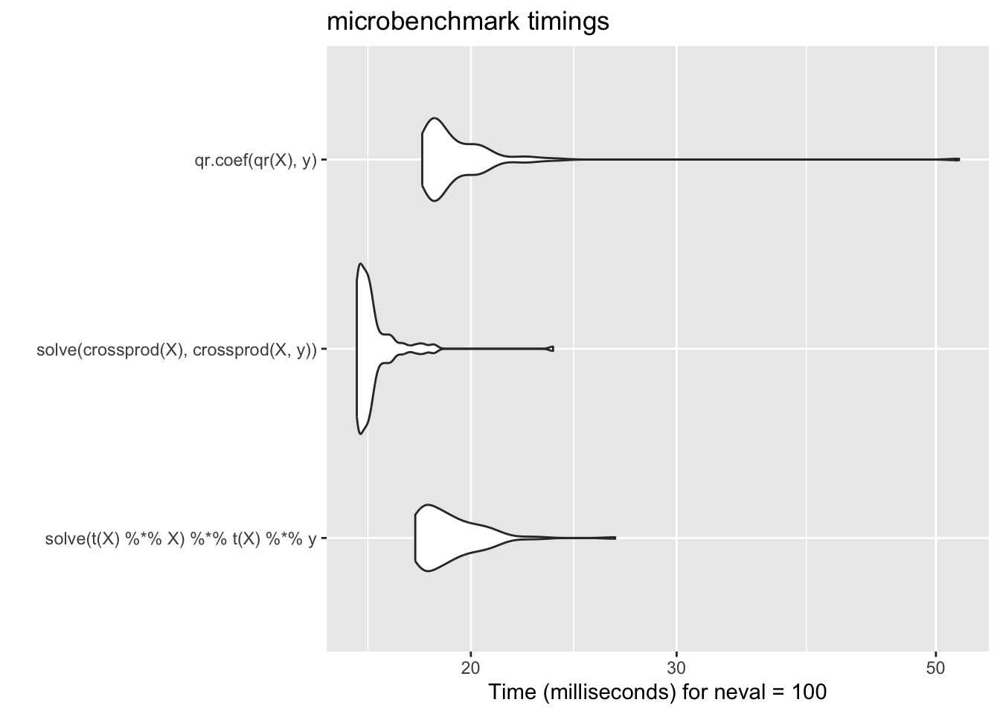
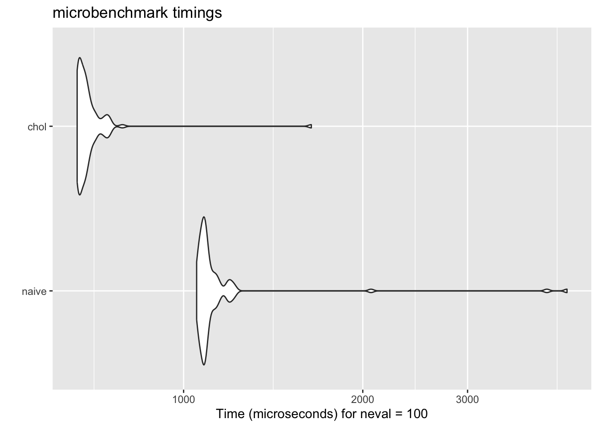
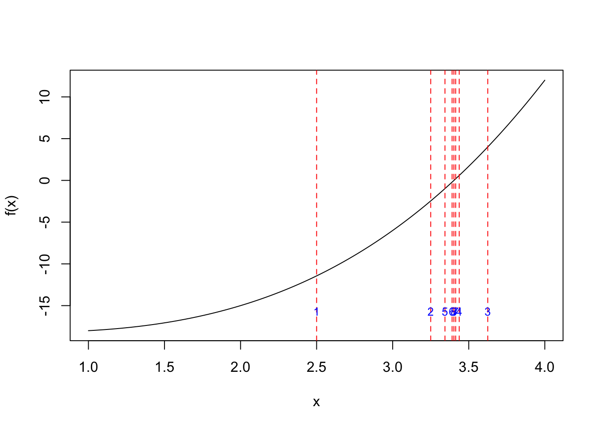
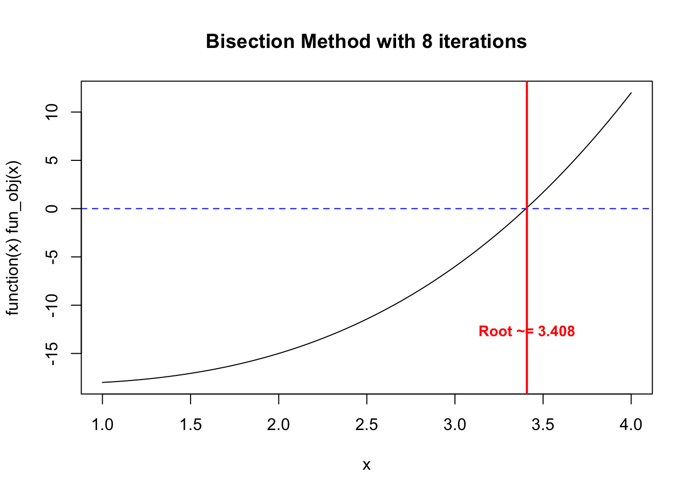
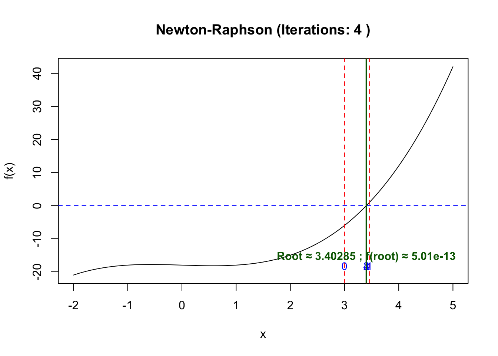

A <- matrix(
c(1, 2, 3,
4, 5, 6,
7, 8, 9),
nrow = 3, ncol = 3, byrow = TRUE)
B <- A
B[3, 3] <- B[3, 3] + 1E-5
qr(A)$rank[1] 2qr(B)$rank[1] 3The optimization plays an important role in statistical computing, especially in the context of maximum likelihood estimation (MLE) and other statistical inference methods. This chapter will cover various optimization techniques used in statistical computing.
There is a general principle that will be repeated in this chapter that Kenneth Lange calls optimization transfer in his 1999 paper. The basic idea applies to the problem of maximizing a function \(f\).
Note 1: steps 2&3 are repeated until convergence.
Note 2: maximizing \(f\) is equivalent to minimizing \(-f\).
Note 3: the surrogate function \(g\) should be chosen such that it is easier to optimize than \(f\).
For instance, for a linear regression \[\begin{equation} y = X\boldsymbol{\beta} + \varepsilon. \label{eq:linmod} \end{equation}\]
From regression class, we know that the (ordinary) least-squares estimation (OLE) for \(\boldsymbol{\beta}\) is given by \(\hat{\boldsymbol{\beta}}=(X^\top X)^{-1} X^\top y\). It is convenient as the solution is in the closed-form! However, in the most case, the closed-form solutions will not be available.
For GLMs or non-linear regression, we need to do this iterativelly!
One confusing aspect of statistical computing is that often there is a disconnect between what is printed in a statistical computing textbook and what should be implemented on the computer.
Some potential issues includ:
Memory overflow: The computer has a limited amount of memory, and it is possible to run out of memory when working with large datasets or complex models.
Numerical Precision: Sometimes, due to the cut precision of floating-point arithmetic, calculations that are mathematically equivalent can yield different results on a computer.
(Lienar) Dependence: The detection of linear dependence in matrix computations is influenced by machine precision. Since computers operate with finite precision, situations often arise where true linear dependence exists, but the computer cannot distinguish it from independence.
In many statistical analyses, such as linear regression and specify the distribution (such as normal distribution), matrix inversion plays a central role.
We know that, a normal density with the parameters mean \(\mu\) and standard deviation \(\sigma\) is \[ f\left(x \mid \mu, \sigma^2\right)=\frac{1}{\sqrt{2 \pi} \sigma} \exp\left\{-\frac{1}{2 \sigma^2}(x-\mu)^2\right\} \] or we may work on the multivariate normal distribution case which is a bit more involved.
\(\boldsymbol{X} = (X1,\dots, X_d)\) is said to be a multivariate normal distribution if and only if it is a linear comibnation of independent and identically distributed standard normals: \[ \boldsymbol{X} = \boldsymbol{CZ} + \mu,\quad \boldsymbol{Z}=(Z_1,\dots,Z_d),\quad Z_i \stackrel{iid}{\sim} N(0,1). \]
The property of the multivariate normal are:
Notation: \(\boldsymbol{X} \sim N(\mu, \boldsymbol{\Sigma})\).
PDF: \[ f(\boldsymbol{x} \mid \mu, \Sigma)=(2 \pi)^{-d / 2} \cdot \exp \left\{-\frac{1}{2}(\boldsymbol{x}-\boldsymbol{\mu})^{\prime} \boldsymbol{\Sigma}^{-1}(\boldsymbol{x}-\boldsymbol{\mu})-\frac{1}{2} \log |\boldsymbol{\Sigma}|\right\}. \] Some of the potential ways to do this is to take logarithm of the PDF (Think about why).
Recall the linear regression model . The OLE for \(\boldsymbol{\beta}\) is given by \(\hat{\boldsymbol{\beta}}=(X^\top X)^{-1} X^\top y\).
We can solve this using the R command
where solve() is the R function for matrix inversion. However, it is not a desired way (think about why).
A better way is to go back to the formula, and look at \[ X^\top X\boldsymbol{\beta}= X^\top y, \] and solve this using the R command
Here, we avoid explicitly calculating the inverse of \(X^\top X\). Instead, we use gaussian elimination to solve the system of equations, which is generally more numerically stable and efficient.
set.seed(2025-09-03)
X <- matrix(rnorm(5000 * 100), 5000, 100)
y <- rnorm(5000)
library(microbenchmark)
microbenchmark(solve(t(X) %*% X) %*% t(X) %*% y)Unit: milliseconds
expr min lq
solve(t(X) %*% X) %*% t(X) %*% y 28.83505 30.16593
mean median uq max neval
31.96782 30.79489 32.63315 111.0151 100
Warning message:
In microbenchmark(solve(t(X) %*% X) %*% t(X) %*% y) :
less accurate nanosecond times to avoid potential integer overflowsUnit: milliseconds
expr min lq
solve(t(X) %*% X) %*% t(X) %*% y 28.90135 30.11608
solve(crossprod(X), crossprod(X, y)) 25.05859 25.27480
mean median uq max neval
31.78686 31.38513 32.66482 53.03354 100
26.15771 25.81678 26.89188 29.12045 100The take home here is that the issues arise from the finite precision of computer arithmetic and the limited memory available on computers. When implementing statistical methods on a computer, it is crucial to consider these limitations and choose algorithms and implementations that are robust to numerical issues.
The above approach may break down when there is any multi-colinearity in the \(\boldsymbol{X}\) matrix. For example, we can tack on a column to \(\boldsymbol{X}\) that is very similar (but not identical) to the first column of \(\boldsymbol{X}\).
solve(crossprod(W), crossprod(W, y))
Error in `solve.default()`:
! system is computationally singular: reciprocal condition number = 1.36748e-32The algorithm does not work because the cross product matrix \(W^\top W\) is singular. In practice, matrices like these can come up a lot in data analysis and it would be useful to have a way to deal with it automatically.
R takes a different approach to solving for the unknown coefficients in a linear model. R uses the QR decomposition, which is not as fast, but has the added benefit of being able to automatically detect and handle colinear columns in the matrix.
Here, we use the fact that X can be decomposed as \(\boldsymbol{X}=QR\), where \(Q\) is an orthonormal matrix and \(R\) is an upper triangular matrix. Given that, we can rewrite \(X^\top X \boldsymbol{\beta}= X^\top y\) as \[\begin{align*} R^\top Q^\top Q R \boldsymbol{\beta}&= R^\top Q^\top y\\ R^\top I R \boldsymbol{\beta}&= R^\top Q^\top y\\ R^\top R \boldsymbol{\beta}&= R^\top Q^\top y, \end{align*}\] this leads to \(R\boldsymbol{\beta}= Q^\top y\). Now we can perform the Gaussian elimination to do it. Because \(R\) is an upper triangular matrix, the computational speed is much faster. Here, we avoid to compute the cross product \(X^\top X\), which is numerical unstable if it is not standardized properly
We can see in R code that even with our singular matrix \(W\) above, the QR decomposition continues without error.
List of 4
$ qr : num [1:3000, 1:101] 54.43933 0.00123 -0.02004 -0.00671 -0.00178 ...
$ rank : int 100
$ qraux: num [1:101] 1.01 1.01 1.01 1 1 ...
$ pivot: int [1:101] 1 2 3 4 5 6 7 8 9 10 ...
- attr(*, "class")= chr "qr"Note that the output of qr() computes the rank of \(W\) to be 100, not 101 as the last column is collinear to the 1st column. From there, we can get \(\hat{\boldsymbol{\beta}}\) if we want using qr.coef(),
[1] 0.024314718 0.000916951 -0.005980588[1] 0.01545039 -0.01010440 NAQ: Why there is an NA?
There isn’t always elegance and flourish. When we take the robust approach, we accept that it comes at a cost.
library(ggplot2)
library(microbenchmark)
m <- microbenchmark(solve(t(X) %*% X) %*% t(X) %*% y,
solve(crossprod(X), crossprod(X, y)),
qr.coef(qr(X), y))Warning in microbenchmark(solve(t(X) %*% X) %*% t(X) %*% y, solve(crossprod(X),
: less accurate nanosecond times to avoid potential integer overflows
Compared with the approaches discussed above, this method performs similarly to the naive approach but is much more stable and reliable.
In practice, we rarely call functions such as qr() or qr.coef() directly, since higher-level functions like lm() handle these computations automatically. However, in certain specialized and performance-critical settings, it can be advantageous to use alternative matrix decompositions to compute regression coefficients, especially when the computation must be repeated many times in a loop (i.e., Vectorization)
Computing the multivariate normal (MVN) density is a common task, for example, when fitting spatial models or Gaussian process models. Because maximum likelihood estimation(MLE) and likelihood ratio tests (LRT) often require evaluating the likelihood many times, efficiency is crucial.
After taking the log of the MVN density, we have
\[ \ell(\boldsymbol{x}\mid \boldsymbol{\mu},\Sigma) := \log \left\{ f(\boldsymbol{x}\mid \boldsymbol{\mu},\Sigma) \right\} = -\frac{d}{2}\log(2\pi) - \frac{1}{2}\log|\Sigma| - \frac{1}{2}(\boldsymbol{x}-\boldsymbol{\mu})^\top \Sigma^{-1}(\boldsymbol{x}-\boldsymbol{\mu}). \] On the right hand side, the first term is a constant, the second term is linear, and the last term is quadratic, which requires much more computational power.
We first center the data \(\boldsymbol{z}:=\boldsymbol{x}- \mu\). Then we have \(\boldsymbol{z}^\top \Sigma^{-1} \boldsymbol{z}\). This simiplified the question for a bit.
Here, much like the linear regression example above, the key bottleneck is the inversion of the \(p\)-dimensional covariance matrix \(\Sigma\). If we take \(\boldsymbol{z}\) to be a \(p\times 1\) column vector, then a literal translation of the mathematics into R code might look something like this,
To illustrate, let’s simulate some data and compute the quadratic form the naive way:
set.seed(2025-09-03)
# Generate data
z <- matrix(rnorm(200 * 100), 200, 100)
S <- cov(z)
# Naive quadratic form
quad.naive <- function(z, S) {
Sinv <- solve(S)
rowSums((z %*% Sinv) * z)
}
library(dplyr)
quad.naive(z, S) %>% summary() Min. 1st Qu. Median Mean 3rd Qu. Max.
70.67 93.61 99.94 100.54 107.31 126.73 Because the covariance matrix is symmetric and positive definite, we can exploit its Cholesky decomposition. That is, we write \(\Sigma = R^\top R\), where \(R\) is a upper triangular matrix. Then, \[ \boldsymbol{z}^\top \Sigma^{-1} \boldsymbol{z}= \boldsymbol{z}^\top (R^\top R)^{-1} \boldsymbol{z}= \boldsymbol{z}^\top R^{-1}R^{-\top} \boldsymbol{z}= (R^{-\top}\boldsymbol{z})^\top (R^{-\top} \boldsymbol{z}) := \boldsymbol{v}^\top \boldsymbol{v}. \] Note that \(\boldsymbol{v}\in \mathbb R^p\) is the solution to the linear system \(R^\top \boldsymbol{v}= \boldsymbol{z}\). Because \(R\) is upper triangular, we can solve this system efficiently using back substitution. Also, we can solve this without doing the inversion.
Once we have \(\boldsymbol{v}\) we can compute its quadratic form \(\boldsymbol{v}^\top \boldsymbol{v}\) by the crossprod() function.
Another benefit of the Cholesky decomposition is that it gives us a simple way to compute the log-determinant of \(\Sigma\). The log-determinant of \(\Sigma\) is simply two times the sum of the log of the diagonal elements of R. (Why?)
library(microbenchmark)
library(ggplot2)
m2 <- microbenchmark(
naive = quad.naive(z, S),
chol = quad.chol(z, S)
)
autoplot(m2)
Q: Why one is faster than the other?
The naive algorithm simply inverts the covariance matrix. The Cholesky-based approach, on the other hand, exploits the fact that covariance matrices are symmetric and positive definite. This results in an implementation that is both faster and numerically more stable—exactly the kind of optimization that makes a difference in real-world statistical computing.
Thus, a knowledge of statistics and numerical analysis can often lead to better algorithms, often invaluable!
On the top, we have linear functions, such as \(y=f(x) = ax + b\) or in the linear regression \(y=X\beta +\epsilon\). It is a small class of the functions, and may be relatively limited.
E.g., what if we have a quadratic relationship? Then \(y=f(x) = ax^2 + bx + c\).
Such nonlinear relationship is very common, , such as \(f(x) = a\sin(bx + c)\) or \(f(x) = a\exp(bx) + c\), and they may not have a closed-form solution like in the linear regression case.
From now on, we will be talking about the numerical approaches to solve these problems.
There are in general two types of the optimization algorithms: (1). deterministic and (2). metaheuristic. Deterministic and metaheuristic algorithms represent two distinct paradigms in optimization.
*. Deterministic methods: such as gradient descent, produce the same solution for a given input and follow a predictable path toward an optimum.
*. In contrast, metaheuristic approaches: incorporate randomness and do not guarantee the best possible solution. However, they are often more effective at avoiding local optima and exploring complex search spaces.
Numerical approximation, what you learned in the mathematical optimization course. Some of the algorithms include:
They often rely on the Karush–Kuhn–Tucker (KKT) conditions.
The root finding is probably the first numerical approach you learned in the numerical analysis course. Consider a function \(f: \mathbb R\to \mathbb R\). The point \(x\in \mathbb R\) is called a root of \(f\) if \(f(x) = 0\).
Q: Why do we care about the root finding?
This idea has broad applications. While finding the values of x such that f(x) = 0 is useful in many settings, a more general task is to determine the values of x for which f(x) = y. The same techniques used to find the roots of a function can be applied here by rewriting the problem as \[ \tilde{f}(x) := f(x) - y = 0. \] In this way, new function \(\tilde{f}(x)\) has a root at the solution to, \(f(x)=y\), original equation.
For linear function, it is trivial. For quadratic function, we can use the quadratic formula, i.e., \[ x = \frac{-b \pm \sqrt{b^2 - 4ac}}{2a}. \] However, for more complex functions, we need to use numerical methods to solve it iteratively. Below, we are going to go over some numerical algorithms.
We first look at the one-dimensional case. The function we want to optimize is
\[f(x) = x^3 - x + 1\]
Bisection method is just like a binary search.
Step 1. Selection two points \(a,b\in \chi \subseteq \mathbb R\), where \(\chi\) is the domain of \(f\). Make sure that \(a\) and \(b\) have opposite signs, i.e., \(f(a)f(b) < 0\).
Step 2. Compute the midpoint \(c = (a+b)/2\).
Step 3. Evaluate and check the sign of \(f(c)\). If \(f(c)\) has the same sign as \(f(a)\), then set \(a=c\). Otherwise, set \(b=c\).
Step 4. Iterate Steps 2 and 3 until the interval \([a,b]\) is sufficiently small.
The intuition here is that we are shirking the search space \(\chi\) by half in each iteration.
Q: Why this algorithm work and what are the assumptions? 1. We require the function to be continuous 2. We require the function to have opposite signs at the two endpoints \(a,b\in\chi\subseteq \mathbb R\). 3. We do not require the differentiability!
Q: But what’s the cost?
Q: Can this work for every function?
Suppose the design region is
a <- 1
b <- 4
curve(0.5*x^3 - 0.5*x - 18, from = a, to = b, xlab = "x", ylab = "f(x)")
fun_obj <- function(x) 0.5*x^3 - 0.5*x - 18
my_bisec <- function(fun_obj, a, b, tol = 1E-2, ind_draw = FALSE) {
if (fun_obj(a) * fun_obj(b) > 0) {
stop("f(a) and f(b) must have opposite signs!")
}
iter <- 0
while ((b - a) / 2 > tol) {
c <- (a + b) / 2
if (ind_draw == TRUE) {
# Draw vertical line
abline(v = c, col = "red", lty = 2)
# Label the iteration above the x-axis
text(c, par("usr")[3] + 2, labels = iter + 1, col = "blue", pos = 3, cex = 0.8)
}
if (fun_obj(c) == 0) {
return(c)
} else if (fun_obj(a) * fun_obj(c) < 0) {
b <- c
} else {
a <- c
}
iter <- iter + 1
}
val_x <- (a + b) / 2
val_fx <- fun_obj(val_x)
return(list(root = val_x, f_root = val_fx, iter = iter))
}
# Run it
res_plot <- my_bisec(fun_obj, a, b, ind_draw = TRUE)
$root
[1] 3.408203
$f_root
[1] 0.09048409
$iter
[1] 8res <- my_bisec(fun_obj, a, b)
plot(function(x) fun_obj(x), from = a, to = b)
abline(h = 0, col = "blue", lty = 2)
title(main = paste0("Bisection Method with ", res$iter, " iterations"))
abline(v = res$root, col = "red", lwd = 2)
text(res$root, par("usr")[3] + 5,
labels = paste0("Root ≈ ", round(res$root, 3)),
col = "red", pos = 3, cex = 0.9, font = 2)
The Newton-Raphson method (or simply Newton’s method) is an iterative numerical method for finding successively better approximations to the roots (or zeroes) of a real-valued function.
Here, we assume that the function \(f\) is differentiable. The idea here is to use the Taylor expansion of the function. Suppose we are search a small neighbour of the solution \(x \in \mathbb R\), say \(x_j \in \mathbb R\) is a small number. Then Then we first order Taylor series to approximate \(f(x_j+h)\) around \(x_j\) is \[ f(x)\approx f(x_j) + f^\prime(x_j) (x-x_j), \] where \(f^\prime(x) := \partial_x f(x)\) is the first derivative of \(f(x)\). So the root of this approximation can be improved by updating its place to where \(f(x_{j+1}) = 0\).
So if \(f(x_j+h)\) is the root, then we have \[ 0 = f(x_j) + f^\prime(x_j) h \implies h = -\frac{f(x_j)}{f^\prime(x_j)}.\]
Then, we can come back to \(x_{j+1}= x_j+h\), and plug the value of \(h\) in from above, we have \[ x_{j+1} = x_j - \frac{f(x_j)}{f^\prime(x_j)}. \]
The algorithm is given as below:
Let \(f:\mathbb R\to\mathbb R\) be differentiable. Given a current iterate \(x_j\) near a root \(r\) with \(f(r)=0\), use the first-order Taylor expansion of \(f\) at \(x_j\): \[f(x)\;\approx\; f(x_j) + f’(x_j)\,(x - x_j).\] To obtain the next iterate, set this linear approximation to zero and solve for x: \[0 \approx f(x_j) + f’(x_j)\,(x - x_j) \quad\Longrightarrow\quad x \approx x_j - \frac{f(x_j)}{f’(x_j)}.\] Define \[\boxed{\,x_{j+1} \;=\; x_j - \dfrac{f(x_j)}{f’(x_j)}\,}.\]
Step 0: Choose a function \(f(x)\): This is the function for which you want to find a root (i.e., solve \(f(x) = 0)\).
Step 1: Calculate the derivative \(f^\prime(x)\): You will need it to apply the formula.
Step 2: Make an initial guess \(x_0\): Select a starting point \(x_0\) near the expected root.
Step 3: Update the estimate: Use the Newton’s method formula to compute the next estimate \(x_1\) using \(x_0\) by \[x_{j+1} = x_j - \frac{f(x_j)}{f^\prime(x_j)}.\]
Step 4: Repeat Steps 2 and 3 until the values converge to a root or reach a desired tolerance.
## Function and derivative
f <- function(x) 0.5*x^3 - 0.5*x - 18
df <- function(x) 1.5*x^2 - 0.5
## Newton–Raphson with iterate tracking
newton_raphson <- function(f, df, x0, tol = 1e-5,
maxit = 100, eps = 1e-5) {
x <- x0
xs <- x0 # store iterates (x0, x1, x2, ...)
for (k in 1:maxit) {
fx <- f(x)
dfx <- df(x)
x_new <- x - fx/dfx
xs <- c(xs, x_new)
if (abs(x_new - x) < tol || abs(fx) < tol) {
return(list(root = x_new, iter = k, path = xs))
}
x <- x_new
}
list(root = x, iter = maxit, path = xs)
}
## Starting pointIf we start at -1 which is far away from
If we start at 3 which is near to the point
x0 <- 3
res <- newton_raphson(f, df, x0)
## Plot range that shows the iterates and root
a <- -2; b <- 5
plot(function(x) f(x), from = a, to = b,
xlab = "x", ylab = "f(x)",
main = paste("Newton-Raphson (Iterations:", res$iter, ")"))
abline(h = 0, col = "blue", lty = 2)
## Draw vertical lines for each iterate with labels 0,1,2,...
for (i in seq_along(res$path)) {
xi <- res$path[i]
abline(v = xi, col = "red", lty = 2)
text(xi, par("usr")[3] + 2, labels = i - 1, col = "blue", pos = 3, cex = 0.9)
}
## Final root marker + label
abline(v = res$root, col = "darkgreen", lwd = 2)
text(res$root, par("usr")[3] + 5,
labels = paste0("Root ≈ ", round(res$root, 5),
" ; f(root) ≈ ", signif(f(res$root), 3)),
col = "darkgreen", pos = 3, cex = 0.95, font = 2)$root
[1] 3.402848
$iter
[1] 4
$path
[1] 3.000000 3.461538 3.403866 3.402848 3.402848a <- -2; b <- 5
plot(function(x) f(x), from = a, to = b,
xlab = "x", ylab = "f(x)",
main = paste("Newton-Raphson (Iterations:", res$iter, ")"))
abline(h = 0, col = "blue", lty = 2)
## Draw vertical lines for each iterate with labels 0,1,2,...
for (i in seq_along(res$path)) {
xi <- res$path[i]
abline(v = xi, col = "red", lty = 2)
text(xi, par("usr")[3] + 2, labels = i - 1, col = "blue", pos = 3, cex = 0.9)
}
## Final root marker + label
abline(v = res$root, col = "darkgreen", lwd = 2)
text(res$root, par("usr")[3] + 5,
labels = paste0("Root ≈ ", round(res$root, 5),
" ; f(root) ≈ ", signif(f(res$root), 3)),
col = "darkgreen", pos = 3, cex = 0.95, font = 2)
$root
[1] 3.402848
$iter
[1] 4
$path
[1] 3.000000 3.461538 3.403866 3.402848 3.402848Notes & common pitfalls
Assumptions: \(f\) is differentiable in a neighborhood of the root \(r\) and \(f’(r)\neq 0\). Under these and a sufficiently good initial guess, convergence is quadratic.
Failure cases: if \(f^\prime(x_j)=0\) (or is very small), the update is ill-defined/unstable; if the initial guess is far, the method can diverge or jump to a different root.
Practical checks: stop when \(|f(x_j)|\le \delta\) or \(|x_{j+1}-x_j| \le \delta\) is below tolerance; cap iterations; guard against tiny \(f’(x_j)\).
The secant method can be thought of as a finite-difference approximation of Newton’s method, so it is considered a quasi-Newton method. It is simialr to Newton’s method, but it does not require the computation of the derivative of the function. Instead, it approximates the derivative using two previous points.
In the second method, we require the first two points, say \(x_0, x_1 \in \mathbb R\). Then, we can approximate the derivative of \(f\) at \(x_1\) using the finite difference formula. Instead of calculate the derivative \(f^\prime(x_1)\), we approximate it as using the secant line. In calculate, we know that, \(f^\prime(x_1) \approx \frac{f(x_1)-f(x_0)}{x_1-x_0}\), if \(x_1\) and \(x_0\) are close. Then, we can plug this approximation into the Newton’s update formula to get \[x_j = x_{j-1} - f(x_{j-1}) \frac{x_{j-1}-x_{j-2}}{f(x_{j-1}) - f(x_{j-2})} = \frac{x_{j-2} f\left(x_{j-1}\right)-x_{j-1} f\left(x_{j-2}\right)}{f\left(x_{j-1}\right)-f\left(x_{j-2}\right)} .\]
We need to calculate the gradient/Jacobian matrix and Hessian matrix.
Many of the heuristic algorithms are inspired by the nature, such as the genetic algorithm (GA) and particle swarm optimization (PSO). These algorithms are often used for complex optimization problems where traditional methods may struggle to find a solution. Some of the popular heuristic algorithms include:
optim() function, nlm() function or mle() function.
The EM (Expectation–Maximization) algorithm is an optimization method that is often applied to find maximum likelihood estimates when data is incomplete or has missing values. It iteratively refines estimates of parameters by alternating between (1) expectation step (E-step) and (2) maximization step (M-step).
Examples are borrowed from the following sources: